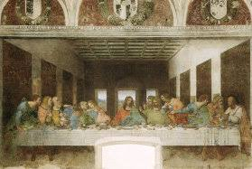
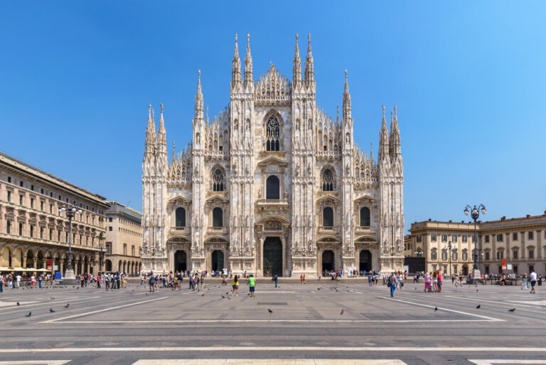

Milan
Milán (en italiano Milano y en lombardo Milàn) es la mayor área metropolitana de Italia y el segundo municipio de Italia por población (1.3 millones en 2017) después de Roma,capital de la Ciudad metropolitana de Milán y de la región de Lombardía. Se encuentra ubicada en la llanura padana, una de las regiones más desarrolladas de Italia. En 2008, el PIB de la ciudad se estimó que era de 366 000 millones de euros, según el INSEE, siendo el segundo más alto de Europa después de la región de París. Milán, como capital económica e industrial de Italia, tiene el aspecto y las características de una metrópoli moderna: rascacielos (célebre el rascacielos Pirelli, construido en 1959), edificios de cristal y metal y grandes almacenes. En la ciudad se encuentra la Pinacoteca de Brera, uno de los mayores museos de Europa, fundada en 1809 por Napoleón Bonaparte como hermano italiano del Louvre. Destaca también la obra maestra de Leonardo da Vinci, la pintura mural La última cena y diversos monumentos románicos (sobre todo iglesias y basílicas) que hacen de Milán la capital del románico lombardo.
Lugares turisticos
Teatro de La Scala
La Scala, abreviatura del nombre oficial italiano, Teatro alla Scala es un famoso teatro de ópera de Milán, Italia. El teatro fue inaugurado el 3 de agosto de 1778 y originalmente se conocía como Nuovo Regio Ducale Teatro alla Scala.

La Ultima Cena
La Última Cena es una de las obras más emblemáticas de Leonardo da Vinci, realizada entre 1495 y 1498 en el convento de Santa Maria delle Grazie en Milán, Italia. La pintura retrata el dramático momento en que Jesús anuncia a sus apóstoles que uno de ellos lo traicionará.

Castello Sforzesco
El Castillo Sforzesco es un gran complejo fortificado, junto al centro histórico de la ciudad. Fue erigido en el siglo XV por Francesco Sforza, al poco de que fuera hecho duque de Milán, sobre los restos de una precedente fortificación medieval del siglo XIV conocido como Castello di Porta Giovia.

Catedral de milan
La catedral de Milán es una catedral gótica emplazada en la ciudad homónima. Es la sede episcopal de la archidiócesis de Milán. Es una de las iglesias de culto católico más grandes del mundo, tiene 157 metros de largo pudiendo albergar hasta 40 000 personas en su interior.
